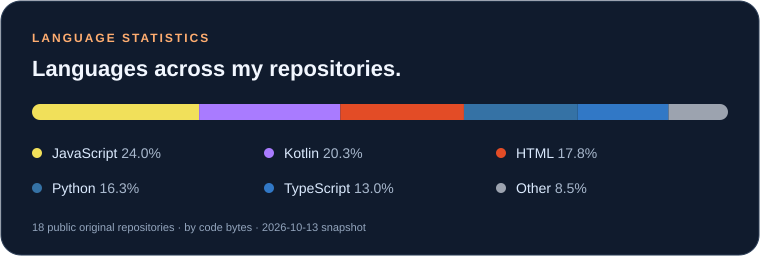

Hi, I'm Zimo Xu · 徐子墨
AI-assisted development · Full-stack projects · Open source
English · 中文
✨ Small tools. Big curiosity. One commit at a time.
English
👋 About Me
I'm a developer and OpenClaw contributor from Hangzhou, China, currently a first-year undergraduate at Communication University of Nanjing (CUCN), enrolled in September 2026.
I started exploring Vibe Coding in 2025 and have since built practical applications with large language models. I enjoy turning everyday needs into useful software, taking projects from an initial idea through implementation and deployment. Alongside building, I'm continuously strengthening my programming fundamentals and learning from the open-source community.
🛠️ What I Build
My work spans web applications, learning tools, monitoring dashboards, and AI-powered workflows. I use natural language to explore ideas and accelerate development, then refine the results through iteration and hands-on testing.
I'm especially interested in the connection between AI agents and practical software: how assistants can automate repetitive tasks, support development, and help people get more done. I run OpenClaw on both my local PC and server to explore these workflows in everyday use.
🌱 Open-Source Contributions
I contribute to feature development in OpenClaw, an open-source personal AI assistant that runs locally and connects to multiple messaging platforms.
Working with an existing codebase gives me opportunities to learn through collaboration, understand how features fit into a larger system, and contribute beyond my own projects. My interests here center on AI assistants, application integrations, and workflow automation.
🚀 Selected Projects
An independently developed vocabulary-learning application for the Gaokao, featuring 3,817 words, flashcards, daily quizzes, and learning-data visualization. This project brings study content, interactive practice, and progress tracking together in one application.
A Python-based monitoring dashboard for Linux and NAS servers, displaying real-time hardware and network metrics. Its industrial sci-fi visual style combines my interest in practical developer tools with attention to interface design.
A responsive personal website built with HTML, CSS, and JavaScript, featuring English/Chinese language switching and light/dark themes. Deployed on GitHub Pages, it publishes automatically when the main branch is updated.
🧰 Tools & Technologies
- Web Development: TypeScript, React, Vite, Tailwind CSS, Node.js
- Python & Backend: Python, Flask
- AI & LLMs: Gemini, ChatGPT, Claude, Qwen, Kimi
- Development Tools: Cursor, Trae, Google AI Studio
🧭 What I'm Exploring
I'm continuing to develop my skills in full-stack web development, AI-agent integration, and deployment. My goal is to keep shipping useful projects, deepen my understanding of the code behind them, and contribute more to the communities I learn from.
中文
👋 关于我
我是徐子墨，来自浙江杭州，是一名开发者和 OpenClaw 贡献者，现为南京传媒学院 2026 级本科生，于 2026 年 9 月入学。
我于 2025 年开始探索 Vibe Coding（自然语言编程），并逐步借助大语言模型构建实用应用。我喜欢把日常需求转化为软件，从最初的想法出发，完成实现与部署。在持续开发的同时，我也不断夯实编程基础，向开源社区学习。
🛠️ 我在做什么
我的项目涵盖 Web 应用、学习工具、监控面板和 AI 工作流。我用自然语言探索想法、加速开发，再通过反复迭代与实际测试完善结果。
我尤其关注 AI Agent 与实用软件的结合：如何让助手自动处理重复任务、辅助开发，并帮助人们更高效地完成工作。我在本地电脑和服务器上运行 OpenClaw，在日常使用中探索这些工作流。
🌱 开源贡献
我参与 OpenClaw 的功能开发。这是一款可以在本地运行、接入多种即时通讯平台的开源个人 AI 助手。
参与已有代码库的开发，让我有机会在协作中学习，理解功能如何融入更大的系统，也让我能在个人项目之外做出贡献。我在这一方向的兴趣主要集中于 AI 助手、应用集成与工作流自动化。
🚀 项目精选
独立开发的高考词汇学习应用，收录 3,817 个单词，支持单词卡片、每日测验与学习数据可视化，将学习内容、交互练习与进度追踪整合到一个应用中。
基于 Python 的监控面板，面向 Linux 与 NAS 服务器，呈现实时硬件与网络指标。工业科幻风格的界面，将我对实用开发工具的兴趣与界面设计结合起来。
使用 HTML、CSS 和 JavaScript 构建的响应式个人网站，支持中英文切换与深浅色主题。网站部署在 GitHub Pages，更新 main 分支后自动发布。
🧰 工具与技术
- Web 开发： TypeScript、React、Vite、Tailwind CSS、Node.js
- Python 与后端： Python、Flask
- AI 与大语言模型： Gemini、ChatGPT、Claude、Qwen、Kimi
- 开发工具： Cursor、Trae、Google AI Studio
🧭 正在探索
我正在持续提升全栈 Web 开发、AI Agent 集成与部署方面的能力。我的目标是不断交付实用项目，更深入地理解背后的代码，并为给予我学习机会的社区做出更多贡献。
📊 Code Garden · 代码小花园

Language share by code bytes in public, non-fork repositories; snapshot: October 13, 2026. This is a repository snapshot, not a measure of proficiency or contribution count.
按公开、非 Fork 仓库的代码字节数统计语言占比；数据快照：2026 年 10 月 13 日。不代表熟练度或贡献次数。
💌 Let's Connect · 联系我
Happy to chat about AI workflows, useful tools, and open-source collaboration.
欢迎交流 AI 工作流、实用工具与开源合作。
Email / 邮箱: xuzimojimmy@163.com
Explore my personal website · 访问我的个人主页 →
☕ + 💻 + a little curiosity = something worth building.